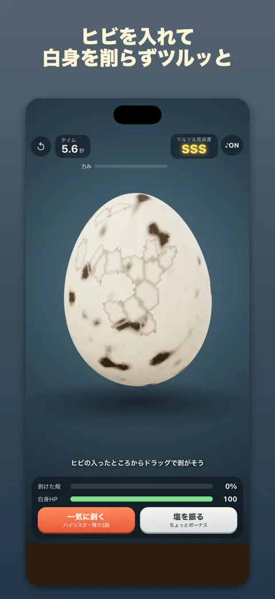
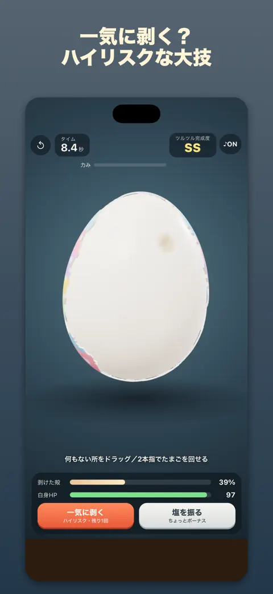
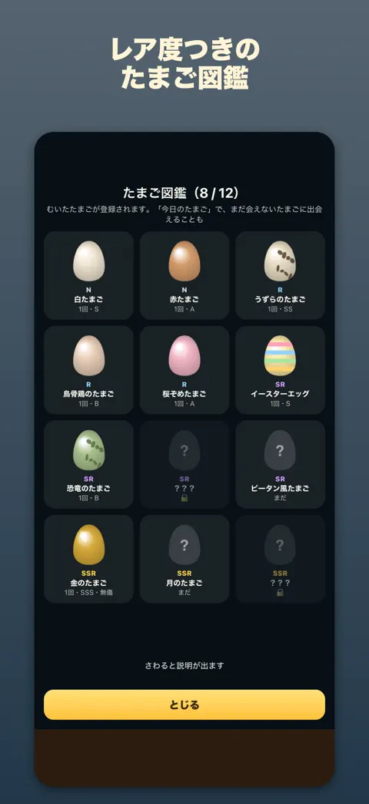
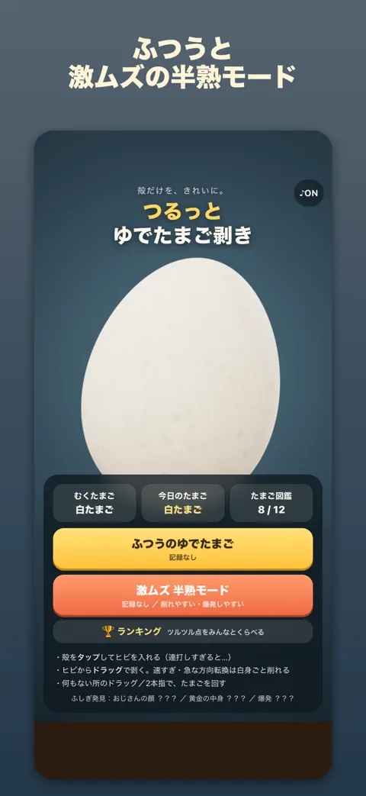

ゆでたまごの殻むき3Dゲーム（iPhone）
つるっと ゆでたまご剥き
今日のたまご、
いちばんツルッとむけるのはだれ？
ヒビを入れて、ゆっくりむいて、白身を削らずに完成させる3Dゲーム。日がわりの「今日のたまご」は、みんな同じたまごでスコア勝負です。
- 毎日・みんな同じたまご
- ランキング
- 18種類のたまご図鑑
無料・広告あり／iPhone（iOS 18 以降）




← 横にスクロールできます →
RANKING
「今日のたまご」でスコア勝負
- みんな同じたまご日がわりの1種類に、みんなで挑戦。その日のいちばん良い点がランキングに入ります。
- いろいろなランキング「今週」「ぜんぶ」のツルツル点、白身を削らずにむいた「無傷タイム」、むいたたまごの合計も。
- 名前を決めるだけサインインはいりません。ニックネームを決めるだけで参加でき、記録はいつでも消せます。
「今日のたまご」には「今週の合計」のランキングもあります。
こんな人におすすめ
- 細かい作業を、ていねいにやるのが好きな人
- ひと息つきたいときに、短く遊べるゲームがほしい人
- いろいろなたまごを集めるのが好きな人
遊び方は3ステップ
- ヒビを入れる殻をタップしてヒビを入れます（連打しすぎると……）。
- むくヒビからドラッグしてむきます。速すぎると白身ごと削れます。
- 完成殻をぜんぶむいたら完成。タイムときれいさでランク SSS〜F。
特徴
- 18種類のたまごうずら・烏骨鶏・恐竜のたまご・金のたまごなど
- SSS〜Fのランクタイムと白身のきれいさで決まる
- 半熟激ムズ半熟モード深く削ると黄身が見える
- 毎日今日のたまごまだ出会っていないたまごに会えることも
くわしい遊び方
ゆでたまごの殻を、白身を削らずにきれいに剥きます。タイムと白身のきれいさでランクが決まります。
- ヒビを入れる：殻をタップします。連打しすぎると白身まで割れます
- 剥く：ヒビからドラッグして剥きます。速すぎ・急な方向転換は白身が削れます
- まわす：何もない所をドラッグするか2本指で、たまごを回します
- 18種類のたまご図鑑：うずら・烏骨鶏・イースターエッグ・金のたまごなど。毎日ちがう「今日のたまご」もあります
- 今日のスコア：「今日のたまご」のその日いちばん良い点がランキングに入ります
- もう1回チャンス：爆発したり白身がくずれたりしたとき、動画を見ると1回だけ続きからむけます（続けたたまごはランキングには入りません）
よくある質問
無料ですか？
はい、無料でダウンロードして遊べます（広告あり）。App Store のページからどうぞ。
どの端末で使えますか？
iPhone（iOS 18 以降）で使えます。Android 版はありません。
途中でやめたい
遊んでいる途中に左上の ❚❚ を押すと、つづける・はじめから・タイトルへもどる を選べます。
音を消したい
画面右上の ♪ ボタンで、音のオン・オフを切り替えられます。
新しいたまごが出ない
剥いた数やランク、半熟モードのクリアなどで、新しいたまごに出会えます。図鑑に条件が出ています。
記録を消したい・引き継ぎたい
記録はこの iPhone の中に保存しています（ランキングに名前をのせた場合は、ニックネームと記録だけを送ります。ランキングの画面の「ランキングから自分の記録を消す」でいつでも消せます）。アプリを削除すると記録も消えます。ほかの端末への引き継ぎにはまだ対応していません。
お問い合わせ
不具合やご要望は、メールでお知らせください。お使いの iPhone の機種と iOS のバージョンを書いていただけると助かります。